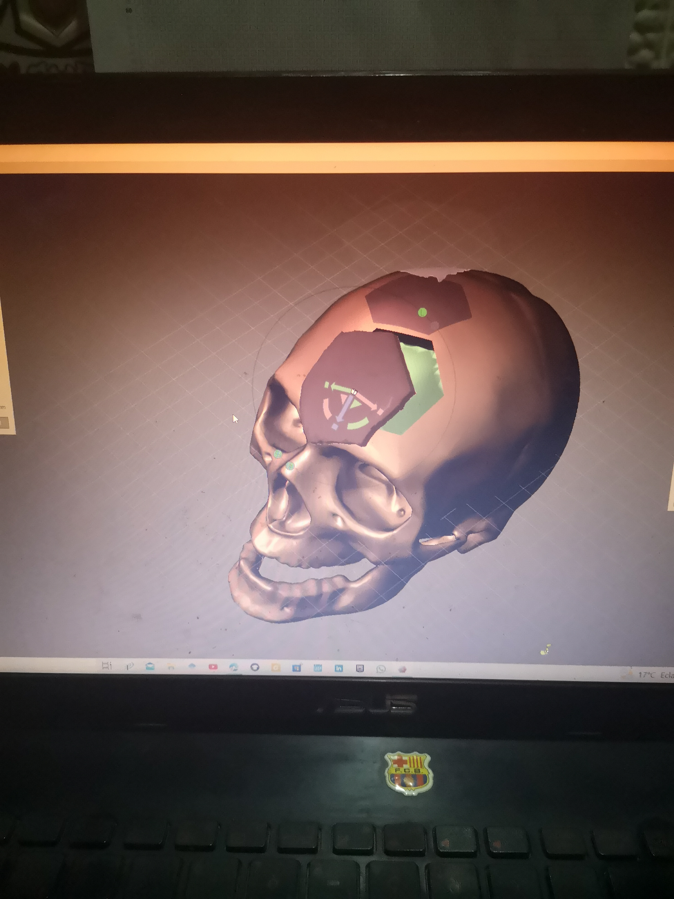
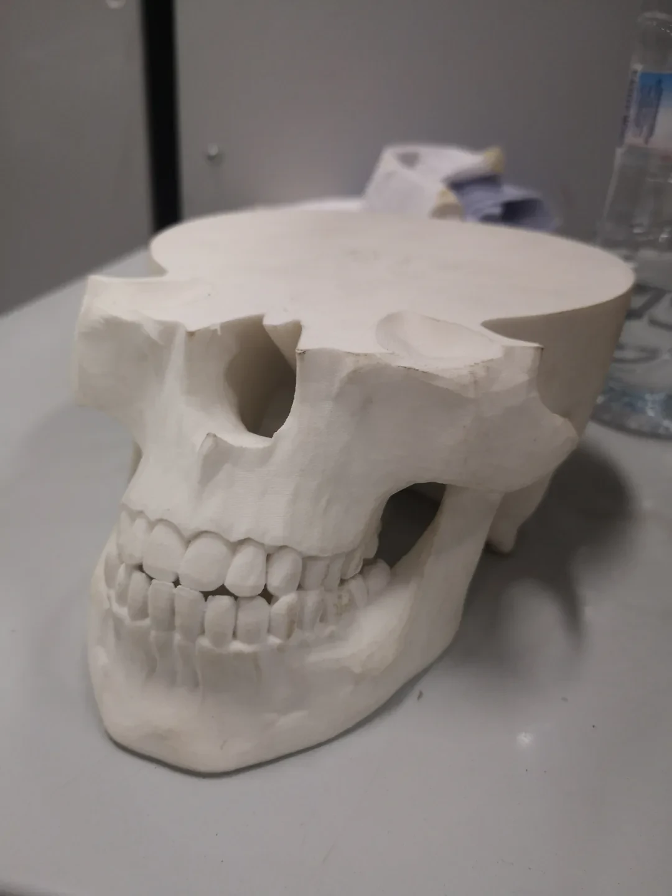
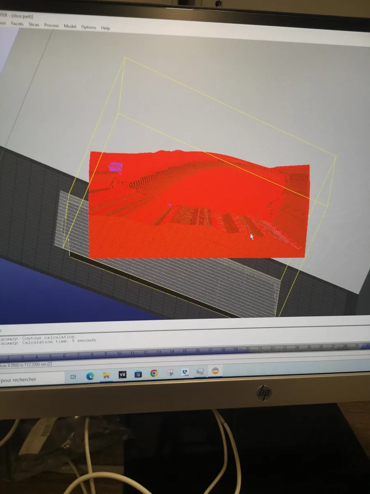

Academic · Biomedical design
Patient-Specific Cranial Implant & Mold
Academic project
Project overview
This academic project started with cranial scan geometry and continued through an implant concept and a two-part mold.
The design had to follow irregular anatomical surfaces while providing clear implant boundaries and fixation interfaces.


My contribution
From scan to manufacturable concept
I worked with scan and mesh geometry to establish the cranial defect boundary, developed the implant shape and studied its fit and fixation interfaces. I then designed a two-part mold concept to connect the digital geometry with prototyping and evaluation. The work is an academic design study, not a clinically certified device.
A closer look
Inside the work


Result
The outcome
Digital skull reconstruction, a fitted implant concept and a split-mold design study. The engineering skills are 3D reconstruction, modeling irregular surfaces, part-interface design and design for prototyping.
Methods & tools
- 3D scan reconstruction
- Surface modeling
- Implant interfaces
- Mold design